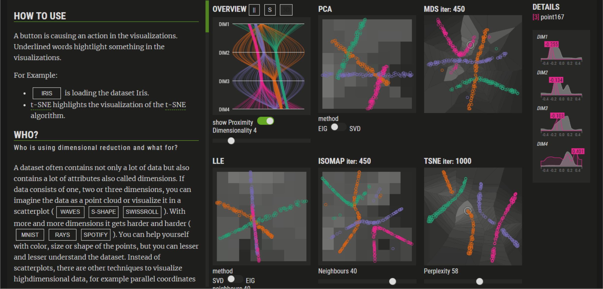

VisCoDeR: A Tool for Visually Comparing Dimensionality Reduction Algorithms

Venue. ESANN (2018) Full Paper
Authors. Rene Cutura, Stefan Holzer, Michaël Aupetit, Michael Sedlmair
Abstract. We propose VisCoDeR, a tool that leverages comparative visualization to support learning and analyzing different dimensionality reduction (DR) methods. VisCoDeR fosters two modes. The Discover mode allows qualitatively comparing several DR results by juxtaposing and linking the resulting scatterplots. The Explore mode allows for analyzing hundreds of differently parameterized DR results in a quantitative way. We present use cases that show that our approach helps to understand similarities and differences between DR algorithms.